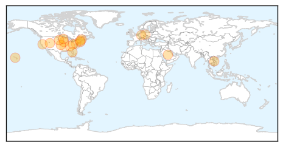
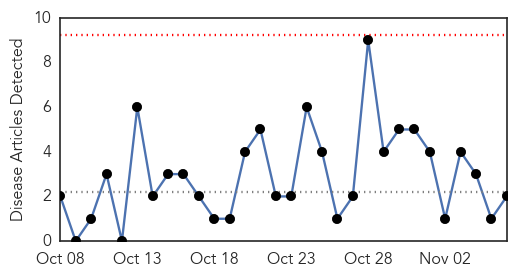
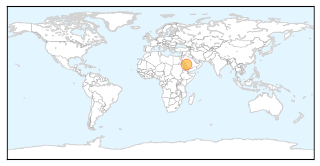

Influenza
30-Day Web Trend
0 alerts, 0 warnings
30-Day Twitter Trend
0 alerts, 0 warnings

Article Locations
Article Confidences

Top Articles:
- 0.994
- Flu season brings stronger vaccines and revised advice
- 0.993
- Flu Season Brings Stronger Vaccines And Revised Advice
- 0.993
- Flu Season Brings Stronger Vaccines And Revised Advice
- 0.993
- Flu Season Brings Stronger Vaccines And Revised Advice
- 0.993
- Flu Season Brings Stronger Vaccines And Revised Advice
- 0.993
- Flu Season Brings Stronger Vaccines And Revised Advice
- 0.993
- Flu Season Brings Stronger Vaccines And Revised Advice
- 0.993
- Flu Season Brings Stronger Vaccines And Revised Advice
- 0.993
- Flu Season Brings Stronger Vaccines And Revised Advice
- 0.993
- Flu Season Brings Stronger Vaccines And Revised Advice
- 0.990
- Flu season is here; Health officials tout flu shots
- 0.981
- Fighting Ebola ... and What Might Come Next
- 0.967
- 17 cases of enterovirus in S.D.
- 0.940
- Bird flu reported on German farm
- 0.849
- Germany reports first case of bird flu strain in Europe
- 0.818
- Stomach virus causes Robinson School in Lyons to close, not flu. What you should know
- 0.758
- Over 30,000 Turkeys Set for Slaughter as Germany Reports Bird Flu Virus H5N8 on Farm
- 0.706
- Northrop Grumman Wins NIH Bioinformatics Resource Center Virus Contract to Support NIH in the Research, Control and Elimination of Pathogens
- 0.701
- Cumberland County Jail staff given flu shots by mistake
- 0.600
- Health department sets flu shot clinics
- 0.554
- School closes for cleaning after student illnesses
Top Tweets:
-
No tweets found for Nov 06, 2014
MERS
30-Day Web Trend
0 alerts, 0 warnings

30-Day Twitter Trend
3 alerts, 0 warnings
Article Locations
Article Confidences

Top Articles:
Top Tweets:
- 0.552
- Increasing trend of MERS-CoV cases, majority in Saudi Arabia, secondary transmission in hospitals: see ECDC update http://t.co/Fu9C4Anc8g